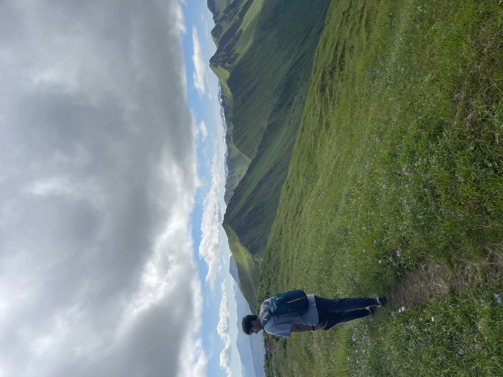
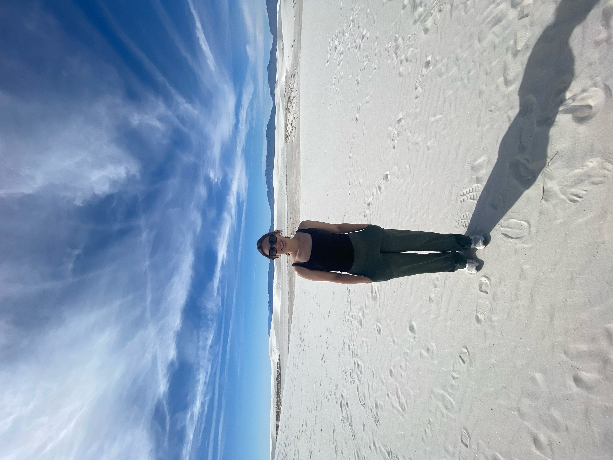

A Little More About Me
Background & Timeline
2024–2026
Graduate Research Assistant, Emory University
- Worked with large‑scale protected biological and population‑health
datasets
- Focused on understanding how genetic mutations influence
inflammatory responses
- Developed reproducible R scripts for collaborative research
- Gained experience applying and troubleshooting regression techniques, like detecting model collinearity
- Strengthened skills in secure data handling and reproducible workflows
2024–2026
M.S. in Biostatistics, Emory University
- Coursework in classical statistics, machine learning, and data science tools
- Developed strong foundations in R, Python, and SAS
- Completed thesis work with the Conneely Lab analyzing the effect of genetic mutations on inflammatory protein abundance
2021–2024
Undergraduate Studies & Early Research
- Graduated with a B.S. in Cell and Molecular Biology from Texas Tech University
- First exposure to research and the importance of documentation for reproducibility
- Fostered my interest in statistical techniques and experimental set-up
Skills
-
Statistical Analysis
- Regression models
- Survival analysis
-
Machine Learning Techniques
- Neural networks
- Random forests
- Natural language processing
-
Data Visualization & Communication
- Shiny and Tableau dashboards
- GitHub
- Data Cleaning
Outside of Work
Outside of research, I love to garden and bake. I also enjoy getting outside, here are some pictures from my most recent adventures!

